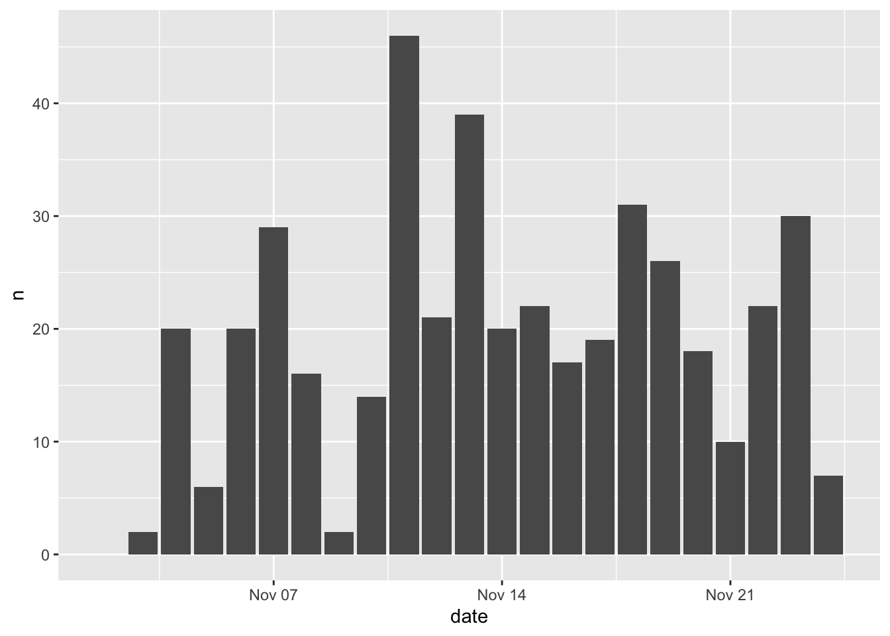
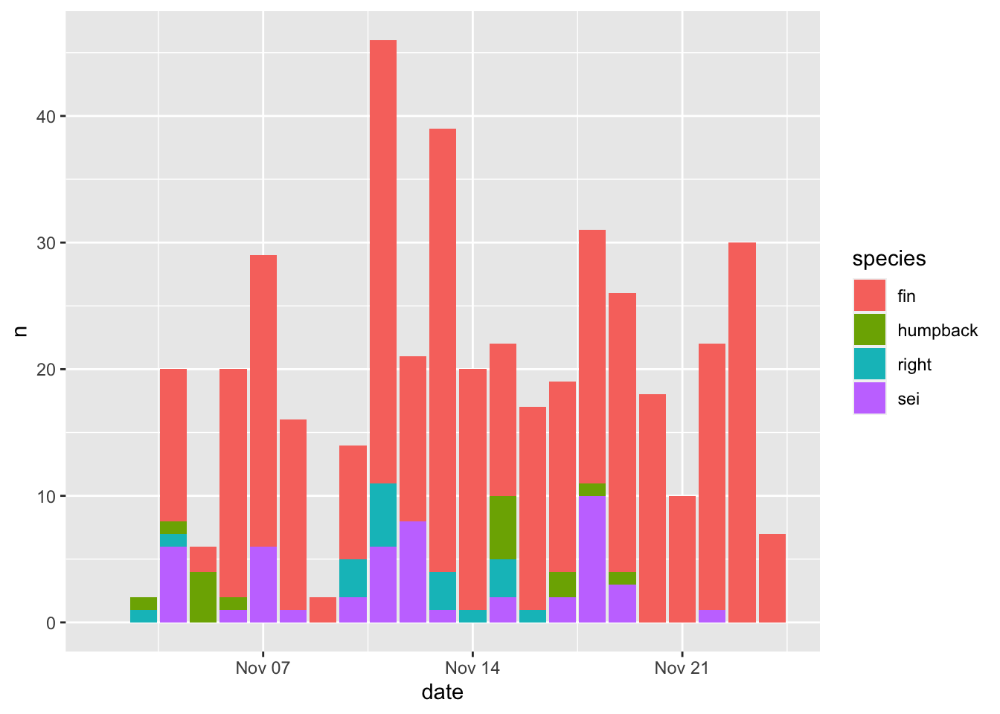
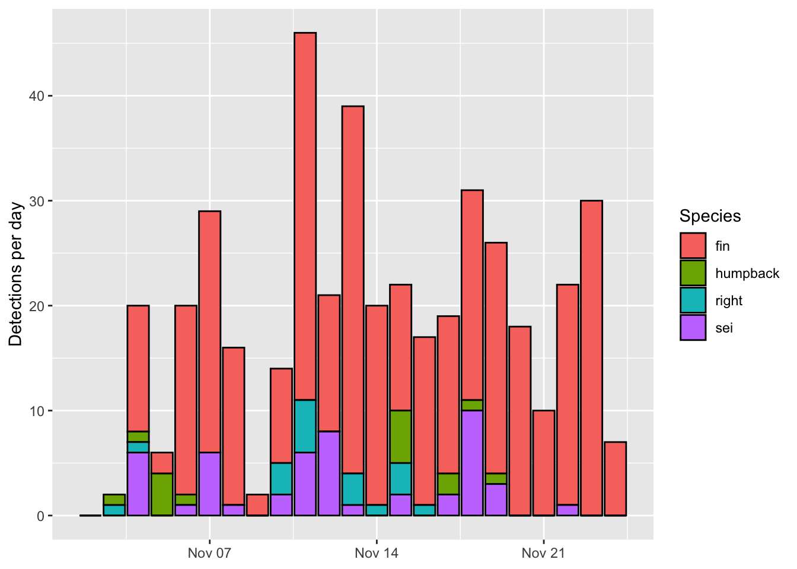
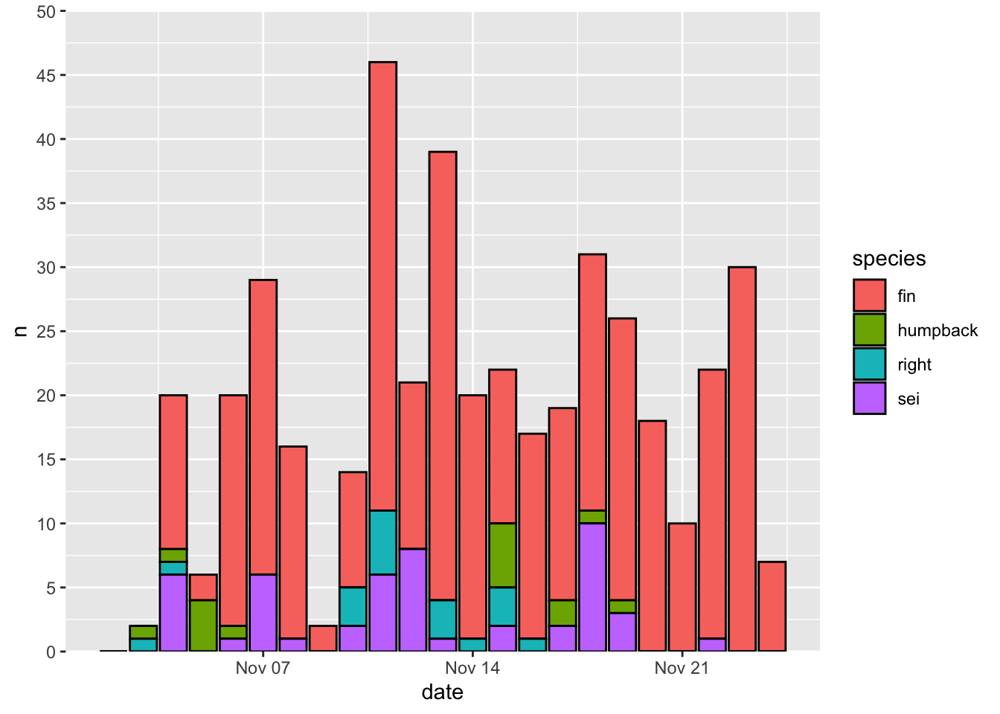
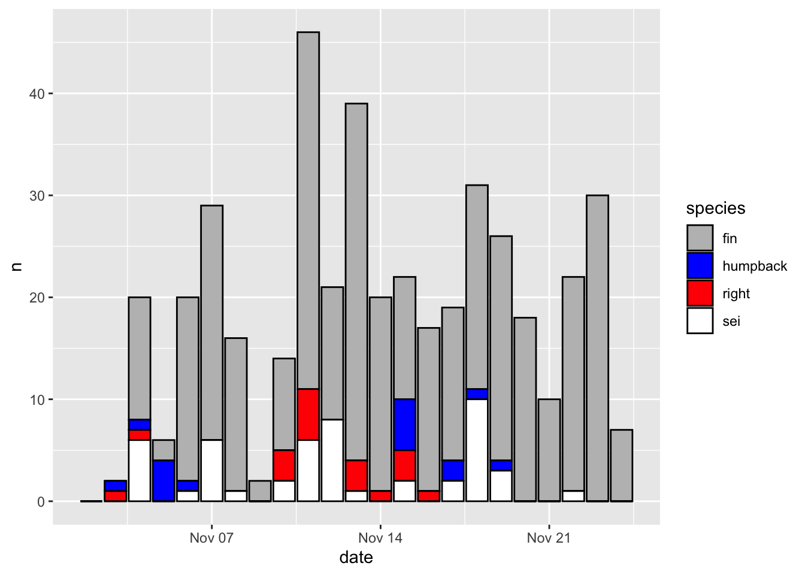
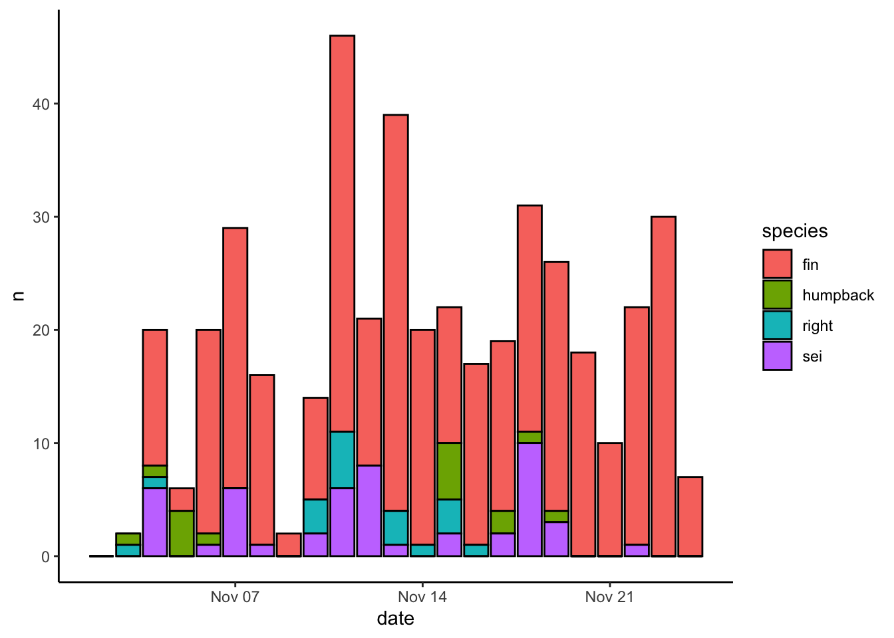
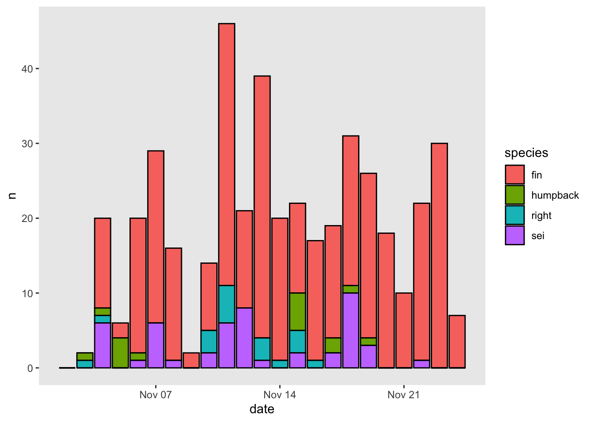
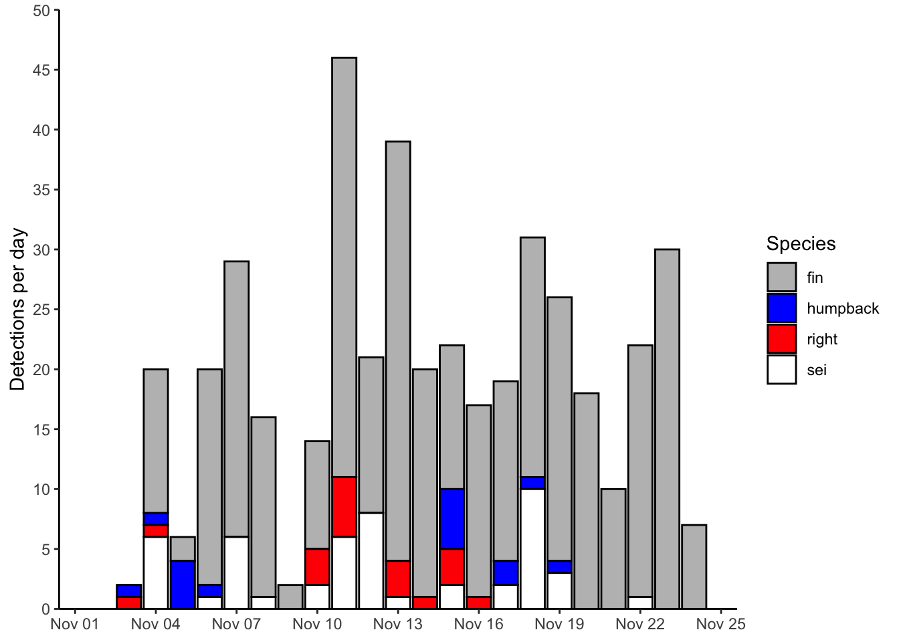

Chapter 3 Getting started
Load the ggplot2 library and read in the example dataset we’ll be using for most of these plots. This is a timeseries of detections of different whale species collected by an ocean glider off southern Nova Scotia, Canada, in the fall of 2017.
# the ggplot library
library(ggplot2)
# the dplyr library (for occasional data manipulation)
library(dplyr)
# daily counts of whale daily detections
df = readRDS(url('https://hansenjohnson.org/files/data/detections_daily.rds'))3.1 Plotting
Let’s make a bar plot of how the number of detections per day (n) changed over time (date). We’ll specify that we’re going to use df as our input data, that the variable date should be mapped to the x axis and the variable n should be mapped to the y axis, and that we’d like to use a column (col) geometry. Here’s how to do that:

There are a few things to note here:
- every ggplot2 plot must start with the
ggplot()function
- the
+is used to connect multiple functions associated with the given plot
- the
data =argument is used to refer to the input table
- the
mapping =argument is used to refer to the mapping aesthetics, which are specified using theaes()function
- the geometry is specified using the
geom_col()function.
You will also see this written as follows:

This produces identical results. I prefer using this method because it makes things easier down the road when things get more complicated and you’re using multiple geometries to map different aesthetics from different datasets.
Now let’s get a little more sophisticated and add use some color to distinguish between different species (species). That is as easy as setting the fill=species within the aesthetics mapping (aes()).

Note - the default ggplot colors are NOT colorblind friendly!
Aesthetics that are specified outside of aes() are applied to that geometry, but not mapped to the data. Here color = 'black' will make the border of all bars black, regardless of the mapping between aesthetics and data.

The output of a ggplot() function can be stored as a variable, which can be further altered, plotted, or saved later on.
Let’s build the plot again, but store it as p instead of plotting it
And now we can plot it by simply printing the variable p
3.2 Formatting
The default formatting options have been carefully chosen so that plots produced by ggplot2 tend to look pretty good right out of the box. Let’s go through some simple, common formatting tweaks.
3.2.1 Labels
Updating labels is easy. There are a number of ways to do it. I prefer to use the labs() function and specify the new label you would like to be associated with each aesthetic. I’ll use NULL when I don’t want a label to appear

Note how I split each label onto a new line. This is optional but makes the code more readible.
3.2.2 Scales
It’s common to want to change the scales in some way. This is achieved using a suite of functions with the following naming convention scale_[aesthetic]_*(). I often do this to update the axis limits or change the default color scheme (I really don’t like the default ggplot2 colors!)
Here’s how to change the y axis limits and break points. I also often use the expand = c(0,0) arugment to remove the margins at the top and bottom of the plot area.

Here’s how to change the color map. I recommend setting the values by hand for discrete variables, and using a viridis colormap for continuous variables. Here’s a convenient way to map color values by hand using a named list.
p + scale_fill_manual(values = c('fin' = 'grey',
'humpback' = 'blue',
'right' = 'red',
'sei' = 'white'))
And finally, here’s how to change the time resolution on the x axis.
3.2.3 Theme
The overall look and feel of a plot are specified by the theme() function. There are also numerous default themes that can be called as follows:
theme_bw()
theme_classic()
theme_minimal()
theme_void()
theme_dark()
Here’s how our original plot looks with the theme_bw() theme applied

You can also use arguments within the generic theme() function to change literally everything about how a plot looks. Here’s a quick example of how to turn the gridlines off:

3.2.4 Putting it all together
Let’s build a nicely formatted plot from scratch
# start ggplot
p_bar = ggplot()+
# specify geometry, data, and aesthetic mapping
geom_col(data = df, mapping = aes(x=date,y=n,fill=species), color = 'black')+
# define fill colors to use for each species
scale_fill_manual(values = c('fin' = 'grey',
'humpback' = 'blue',
'right' = 'red',
'sei' = 'white'))+
# update the y axis limits and break points
scale_y_continuous(limits = c(0,50), breaks = seq(0,50,5), expand = c(0,0))+
# update x axis for more regular date breaks
scale_x_date(date_breaks = '3 day', date_labels = '%b %d')+
# write nice labels
labs(x = NULL, y = 'Detections per day', fill = 'Species')+
theme_classic()
# print plot
p_bar
3.2.5 Saving
Saving a plot in ggplot2 is done using the ggsave() function. Here’s how I’d do that with the example plot: